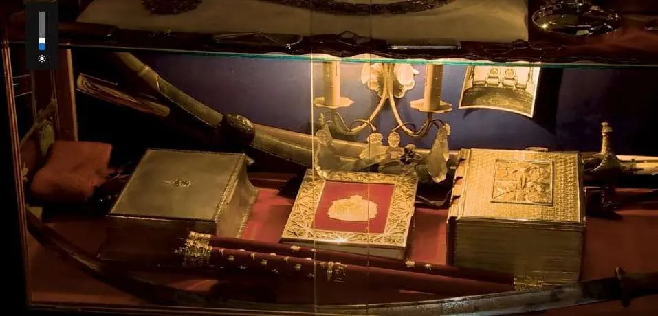
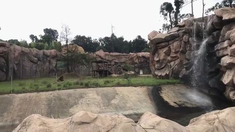
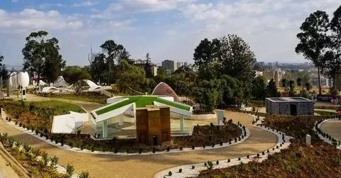

The Unity Park of Ethiopia has natural, cultural, historical, and heritage tourism attractions all in one place. The unique natural attractions of Unity Park are zoos with 37 mammals, nine types of animals, namely Giraffes, Zebras, Kudu, Impala, Eland, Gemsbok, Nyala, Wildebeest, and White Rhino, thirteen species of aquatic animals, and indigenous various birds in the aviary. The Black Mane Lions’ are also found only in Ethiopia. Another natural attraction of Unity Park is the traditional Garden with indigenous plants.
The Unity Park of Ethiopia has three major tourist attractions.
Natural Tourist Attractions
Historical and Heritage Tourist Attractions and
Cultural Tourist Attractions

Historical Artifacts of National Palace
Historical artifacts show not only the existence of objects in a Palace but also show the level of an ancient civilization. None of the artifacts of the palace was an ordinary item. But everything was made of gold, from the king’s throne to simple restaurant materials. For example, the photo frame, Jewelry, Book covers, utensils, and other sculptures were all made of gold. Among the historical artifacts, historical and religious books written by Amharic, English, and Geez languages. These books are so old and can be used for research and study worldwide. It is also used to teach history to future generations. Traditional and handmade furniture, advance telecommunication device, transportation cars and photo gallery of great world leaders are also among the historical artifacts of National Palace.
The Unity Park sculpture
Various sculptures of the park depict the culture, civilization, and strength of Ethiopian nationalities. sculptures are made of wood, stone, and mud. Moreover, the hand-crafted sculptures show Ethiopian masterpieces.

Black Mane Lion zooBeing one of the two zoos in Unity Park, the black Mane Lions Zoo is a 170m cave designed for visitors to walk in and see the Black Mane Lions (endemic to Ethiopia) and Ostriches. The surrounding has trees, artificial waterfalls, and fountains.

Pavilions
These pavilions have a collection of sculptures, crafts, and displays of traditional clothing and food making. They are a hub of their history, natural resource, tourist destinations, and rich culture and glimpse Ethiopia’s regional states.